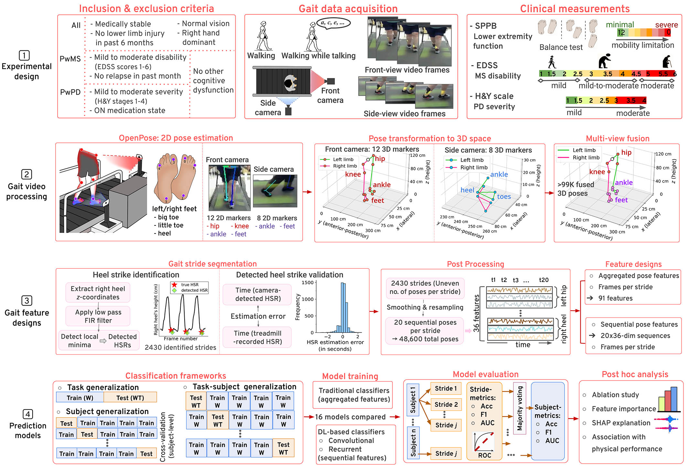
Abstract
This study examined the effectiveness of a vision-based framework for multiple sclerosis (MS) and Parkinson’s disease (PD) gait dysfunction prediction. We collected gait video data from multi-view digital cameras during self-paced walking from MS, PD patients and age, weight, height and gender-matched healthy older adults (HOA). We then extracted characteristic 3D joint keypoints from the collected videos. In this work, we proposed a data-driven methodology to classify strides in persons with MS (PwMS), persons with PD (PwPD) and HOA that may generalize across different walking tasks and subjects. We presented a comprehensive quantitative comparison of 16 diverse traditional machine and deep learning (DL) algorithms. When generalizing from comfortable walking (W) to walking-while-talking (WT), multi-scale residual neural network achieved perfect accuracy and AUC for classifying individuals with a given gait disorder; for subject generalization in W trials, residual neural network resulted in the highest accuracy and AUC of 78.1% and 0.87 (resp.), and 1D convolutional neural network (CNN) had highest accuracy of 75% in WT trials. Finally, when generalizing over new subjects in different tasks, again 1D CNN had the top classification accuracy and AUC of 79.3% and 0.93 (resp.). This work is the first attempt to apply and demonstrate the potential of DL with a multi-view digital camera-based gait analysis framework for neurological gait dysfunction prediction. This study suggests the viability of inexpensive vision-based systems for diagnosing certain neurological disorders.
Core contributions
- 1Camera-only gait screeningAn end-to-end pipeline that turns ordinary front and side video into 3D gait poses, with no motion-capture lab, wearables or specialist needed. Low-cost, contact-free and suited to monitoring at home.
- 2MS vs. PD vs. healthyA three-way classifier for people with MS, people with PD and healthy older adults, where earlier work typically separated one disease from healthy controls.
- 3Tested on new tasks and new peopleThree evaluation settings of rising difficulty: a new walking task, new people, and new people in a new task, the closest to real use.
- 416 models comparedNine traditional classifiers and seven deep-learning models (convolutional and recurrent), evaluated across all three evaluation settings.
- 5Explainable predictionsAblations, permutation importance and SHAP show which joints drive each decision, and errors are linked to physical performance, measured by the Short Physical Performance Battery (SPPB).
- 6Validated and open sourceVideo poses are checked against an instrumented treadmill, and the full workflow is released on GitHub.
Method
1Study design
People with MS (mild to moderate disability), people with PD (mild to moderate severity, on medication) and matched healthy older adults walked on a treadmill at their own pace, both normally and while talking (reciting every other letter of the alphabet), a dual task that mimics the distractions of everyday walking. A front camera and a side camera recorded each trial at 30 frames per second, alongside standard clinical measures of mobility and disease severity. In all, 33 people took part (14 healthy older adults, 10 with MS, 9 with PD), giving 116 one-minute gait videos.
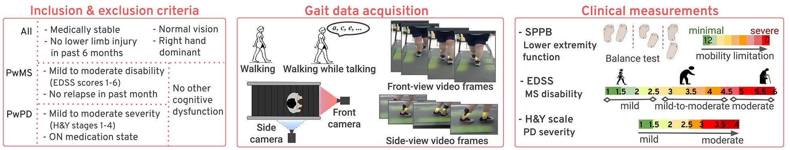
2From video to 3D pose
We used OpenPose to extract 2D body keypoints in every frame: 12 markers (hips, knees, ankles, feet) from the front camera and 8 foot and ankle markers from the side camera. We then used camera calibration to lift each view into 3D, measured in centimetres from the treadmill, and fused the two views into one 3D pose per frame.
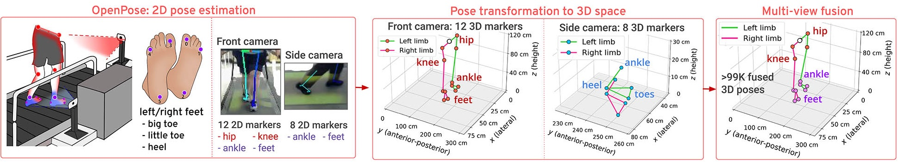
3Gait features
We detected heel strikes from the height of the right heel, validated them against the treadmill’s own record, and used them to split the walking into 2,430 strides. We described each stride in two ways: 91 summary features (range, variability and left–right asymmetry of the body coordinates, plus frames per stride) for traditional classifiers, and a 20-step sequence of 36 coordinates for deep-learning models.
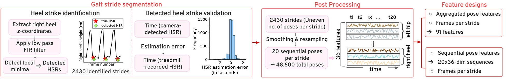
4Prediction models
We compared 16 models, from traditional classifiers on summary features to convolutional and recurrent networks on pose sequences, in three settings of increasing difficulty:
- Task generalization: train on normal walking, test on walking while talking.
- Subject generalization: test on people the model has never seen.
- Task and subject generalization: new people and a new walking task.
We classify each stride, then a majority vote over a person’s strides gives their prediction. We used SHAP explanations, feature importance and ablations to show which parts of the gait drive the predictions.
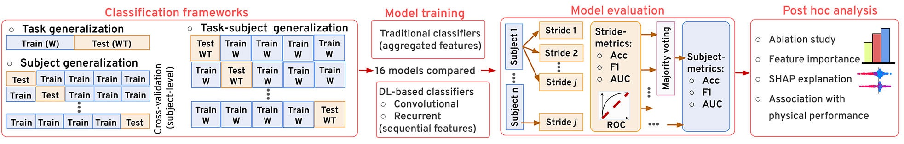
The 16 models are nine traditional classifiers (logistic regression, linear and RBF support vector machines, decision tree, random forest, AdaBoost, XGBoost, gradient boosting and a multilayer perceptron) and seven deep-learning models: convolutional (1D CNN, residual network, multi-scale residual network, temporal convolutional network) and recurrent (RNN, LSTM, GRU).
Results
1Can we trust poses from video?
Before predicting disease, we checked the video poses against the instrumented treadmill. For each support phase we compared the centre of pressure measured by the treadmill with the centroid of the base of support formed by the feet as seen on camera, across 2,483 strides and 9,768 valid support phases.
The average Euclidean distance between the two was 9.95 ± 5.68 cm in single support and 8.82 ± 5.49 cm in double support, with almost no systematic offset sideways or front-to-back. The two measures are not expected to line up exactly, but their agreement supports the validity of the camera-based 3D poses.
2Predicting MS and PD
- Deep learning beat traditional machine learning in almost every setting, and convolutional networks were the top performers throughout.
- A new walking task alone was easy: trained on normal walking and tested on walking while talking, the top three deep-learning models classified every person correctly.
- New people are the real challenge: the best models reached 75–79% accuracy on people they had never seen, with an AUC of up to 0.93.
- Voting across a person’s strides beats single strides, for example from 83.1% to 92% accuracy for XGBoost in task generalization.
Best model in each setting, at the level of individual people (healthy older adults vs. MS vs. PD):
| Setting | Best model | Accuracy | AUC |
|---|---|---|---|
| Task generalizationtrain on walking, test on walking while talking | Multi-scale residual network | 100% | 1.00 |
| Subject generalization, walkingnew people | Residual network | 78.1% | 0.87 |
| Subject generalization, walking while talkingnew people | 1D CNN | 75% | 0.77 |
| Task and subject generalizationnew people in a new task | 1D CNN | 79.3% | 0.93 |
Show full results (paper Tables I–III): top three machine-learning and deep-learning models, stride- and person-level
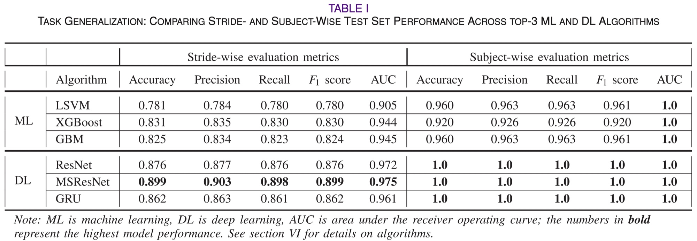
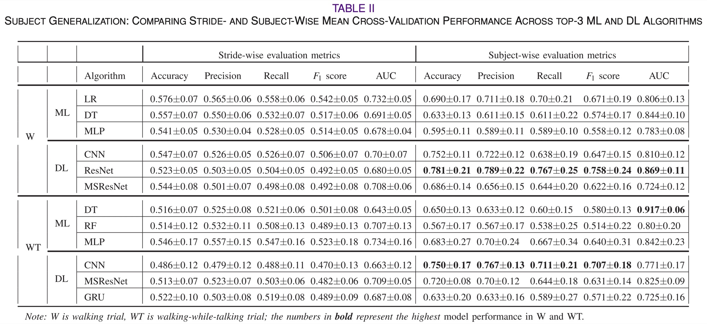
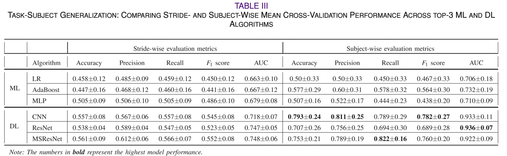
Deep-learning models working directly on pose sequences did best when the model had to handle new people. The results suggest that inexpensive camera-based systems could help screen for neurological gait disorders, for example at home or in clinics far from specialists.
Analysis
1Which body parts matter?
An ablation that adds body regions one at a time (feet, then ankles, then knees, then hips) improved accuracy at every step, so the best models use the whole lower body. Permutation feature importance then shuffles one joint at a time and measures how much the model’s AUC drops: the bigger the drop, the more that joint matters.
- The whole lower body matters: accuracy rose with each body region added, from feet alone to feet, ankles, knees and hips.
- Knees are the most informative joints, followed by the feet (heels and toes); right-side joints mattered more than left.
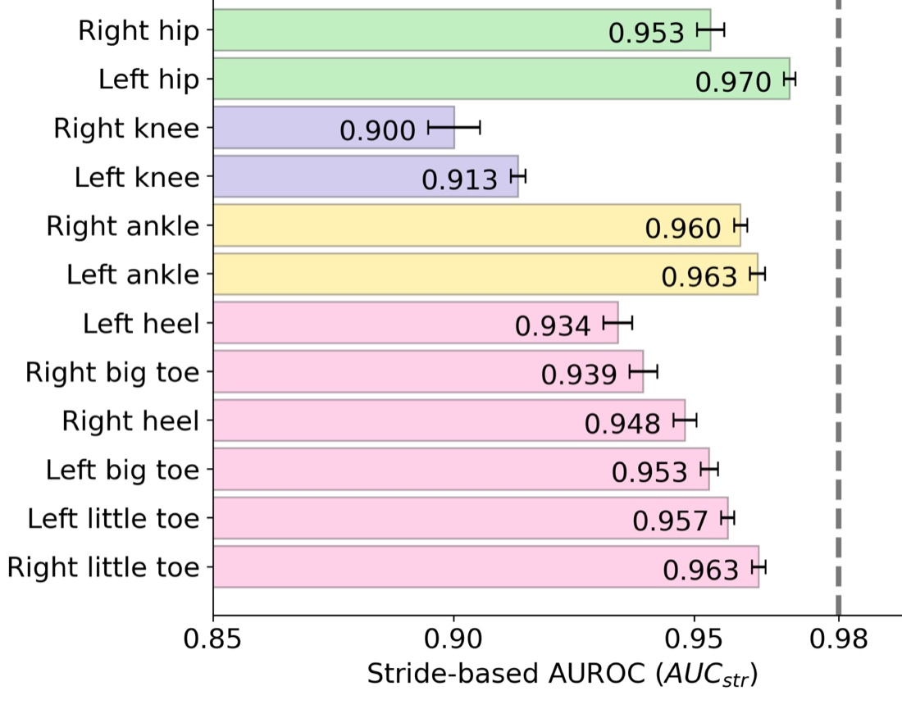
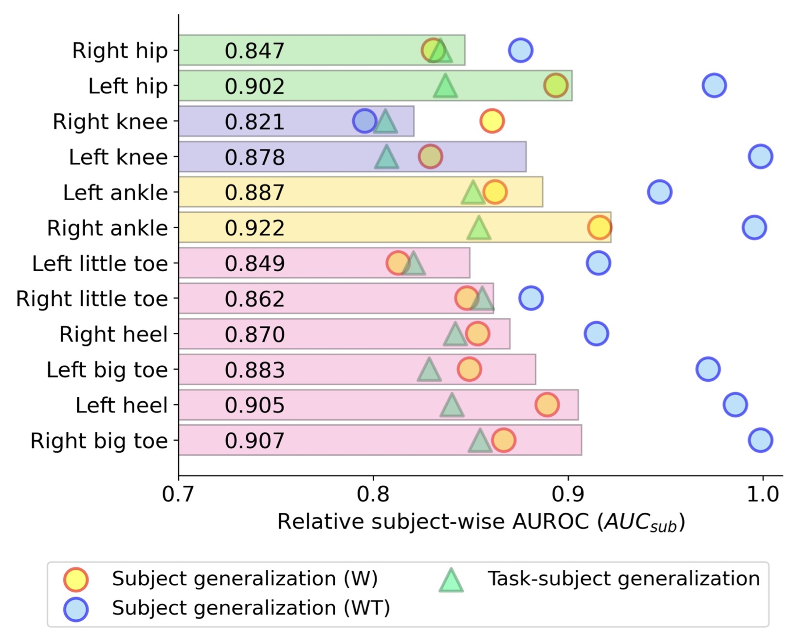
2Explaining predictions
SHAP shows how each feature pushes a single stride’s prediction towards one class or another. We also checked whether the model’s mistakes line up with how physically fit people are, using the Short Physical Performance Battery (SPPB, from 0 to 12, where higher means less frail).
- Predictions are explainable: for a stride correctly flagged as MS (probability 0.95), knee coordinates drove the decision.
- Mistakes follow physical function: frailer healthy adults were mistaken for MS and fitter people with MS for healthy, while MS and PD were the hardest to tell apart.
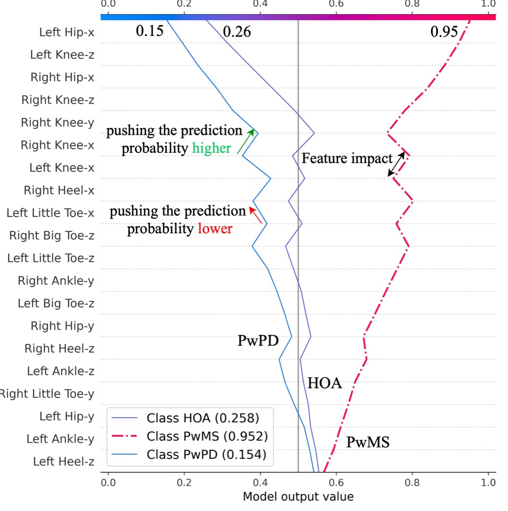
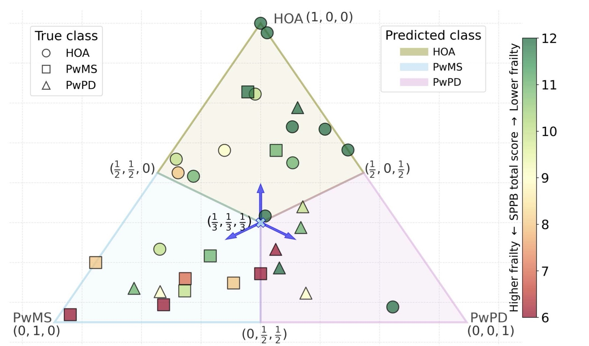
In the news
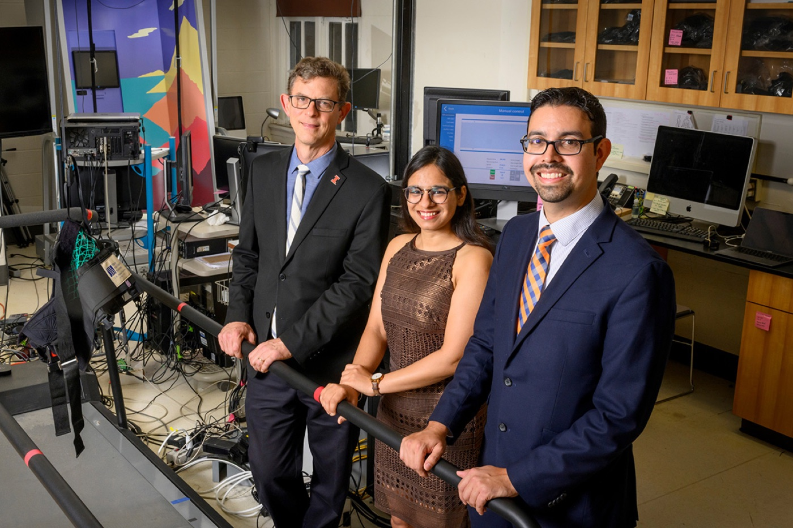
- Team uses digital cameras, machine learning to predict neurological diseaseIllinois News Bureau; also Carle Illinois College of Medicine, EurekAlert!, Medical Xpress
- At-home digital cameras monitor gait, may speed diagnosisParkinson’s News Today
- New gait analysis tool found to correctly ID MS patients in videosMultiple Sclerosis News Today
- Researchers use digital cameras, machine learning to predict neurological diseaseThe Brighter Side of News
- Video e AI per la diagnosi di malattie neurologicheMedilogy (Italian)
BibTeX
@article{kaur2023vision,
title = {A Vision-Based Framework for Predicting Multiple Sclerosis and
Parkinson's Disease Gait Dysfunctions -- A Deep Learning Approach},
author = {Kaur, Rachneet and Motl, Robert W and Sowers, Richard and
Hernandez, Manuel E},
journal = {IEEE Journal of Biomedical and Health Informatics},
volume = {27},
number = {1},
pages = {190--201},
year = {2023},
doi = {10.1109/JBHI.2022.3208077}
}